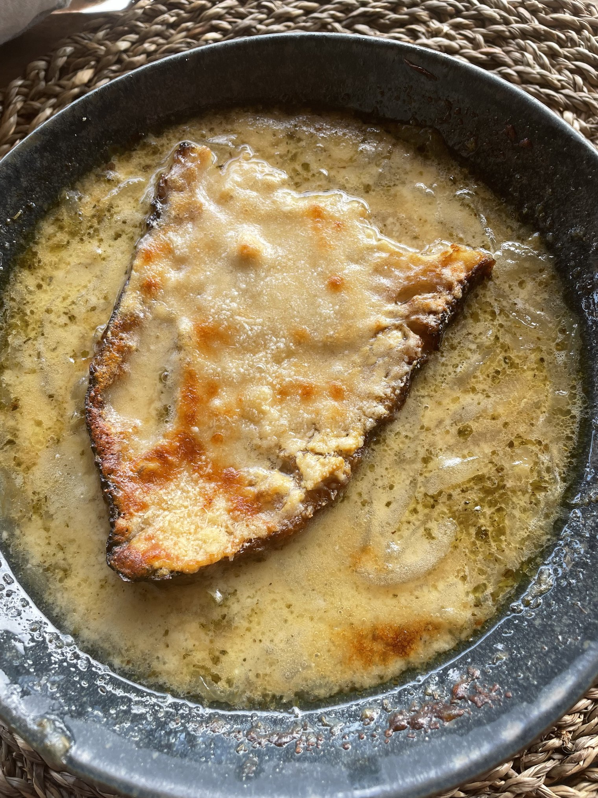

Sopa de cebolla gratinada
Ingredientes
6×
- 30 g de mantequilla
- 8 cebollas medianas
- 1 diente de ajo
- 1 cda de harina
- 1 l de caldo
- sal
- pimienta
- 8 rebanadas de pan
- 4 cdas de queso gruyère o parmesano

Preparación
Paso 1
Derretir 30 g de mantequilla en una cazuela.
Paso 2
Poner 8 cebollas medianas cortadas a lo largo y 1 diente de ajo machacado.
Paso 3
Cuando la cebolla esté casi hecha, poner 1 cda de harina, el 1 l de caldo (se puede hacer con 1/2 l de muscadet o vino blanco + 1/2 l de agua), sal y pimienta. Hervir un poco.
Paso 4
Colocar en los platos con 8 rebanadas de pan y 4 cdas de queso gruyère o parmesano por todo el plato, y hornear 20min.
Resumen
30 g de mantequilla
Derretir
8 cebollas medianas
1 diente de ajo
1 cda de harina
1 l de caldo
sal
pimienta
Hervir
8 rebanadas de pan
4 cdas de queso gruyère o parmesano
hornear